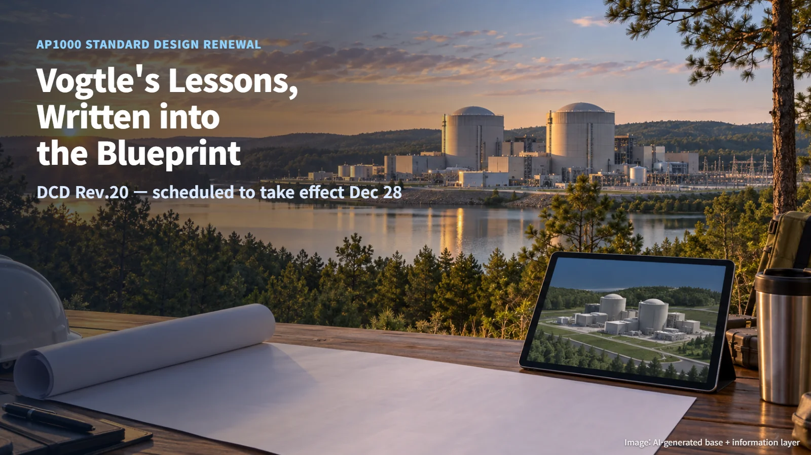
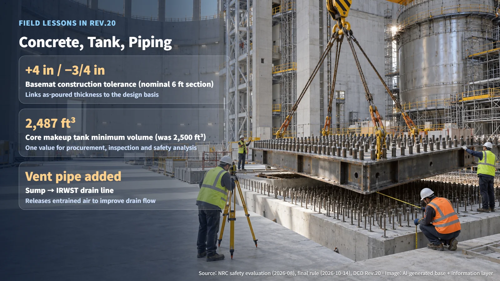

United States · AP1000 Design Certification
Vogtle's Lessons, Written into the Blueprint: AP1000 Standard Design Rev.20
The NRC's renewal rule folds construction, testing and commissioning experience from Vogtle Units 3 and 4 into AP1000 DCD Rev.20.
Editorial responsibility: GlobalNuclearNews
While a nuclear plant is being built, countless drawings get revised on site and test methods get refined. So how does all that hard-won experience reach the next plant? A rule published by the US Nuclear Regulatory Commission (NRC) on October 14 to renew the AP1000 standard design offers a clear answer. At its core, the rule folds the design and licensing content that settled into place during the construction, testing and operation of Vogtle Units 3 and 4 into Revision 20 of the Design Control Document (DCD Rev.20).

What a Design Certification Renewal Is: Why an Approved Design Gets Rewritten
Design certification is a system in which the regulator reviews a reactor design in advance, so that multiple later projects can reference it as is. The document that holds the description of that design and its safety basis is the DCD. Tier 1 of the DCD contains the key design features and the ITAAC (inspections, tests, analyses and acceptance criteria, a checklist used to confirm that the finished plant was built as designed). Tier 2 contains the detailed design and analyses.
This renewal carries the design changes and licensing content approved while Vogtle 3 and 4 were built and tested back into the common design. The NRC audited the documentation for the 190 previously approved licensing actions included in Rev.20 and confirmed that they match Revision 13 of the Vogtle Updated Final Safety Analysis Report (UFSAR) and the changes approved after it.
The experience came in through three channels. The first is changes approved through license amendments and exemptions. The second is changes handled and recorded under the existing change control process. The third is standard wording that captures items individual plants worked out on their own; later applicants check whether that wording fits their own site before using it. In effect, drawings corrected in the field return to the standard design package.
Lessons from the Field: Concrete, Modules and Piping
The first lesson concerns the thickness tolerance of the basemat, the concrete foundation slab that supports the reactor building. When concrete is actually poured, its thickness always varies a little from the drawings. Rev.20 lists a construction tolerance of +4 in (about 10 cm) and −3/4 in (about 2 cm) for a nominal 6 ft (about 1.8 m) section. For the structural modules that combine steel plate and concrete, the revision defines a direct load path running from the floor into the walls as the key to the joint.
The second concerns the core makeup tank (CMT), a vessel that stores borated water at system pressure and uses it to replenish reactor coolant. Its stated minimum volume changed from 2,500 ft³ to 2,487 ft³, a difference of 13 ft³ (0.52%). One cubic foot is about 28 L, so 2,487 ft³ comes to about 70 m³. The number is small, yet it is the result of aligning the procurement specification, the volume measured during inspection and the input value used in safety analysis into one figure, and the new value is also reflected in the Tier 1 ITAAC.
The third concerns piping. A vent pipe was added to the drain line that carries water from the containment sump to the in-containment refueling water storage tank (IRWST). Its purpose is to release air entrained in the water and improve drain flow. In piping where water moves by gravity, even a small detail that lets air escape becomes part of the flow performance.

Commissioning Experience Changed the Test Methods
Commissioning is the stage in which a completed system is run for the first time to confirm its performance. The preoperational test of the passive residual heat removal heat exchanger (PRHR HX) changed from a natural circulation test to a forced flow test. In natural circulation, water moves through the loop by temperature differences alone, with no pump; in forced flow, a pump drives the water. The related ITAAC and test documents were revised at the same time.
The coastdown curve, which describes how flow gradually decreases through inertia after a reactor coolant pump is stopped, has been reflected in both the safety analysis and the ITAAC. As a result, the equipment characteristics used in the analysis and the acceptance criteria applied in the field now point to the same numbers.
The earlier test data also include first-of-a-kind AP1000 tests at Sanmen Units 1 and 2 and Haiyang Unit 1 in China. The approval path through which Vogtle used results such as automatic depressurization system (ADS) depressurization tests and startup tests including natural circulation and load follow carries forward into Rev.20. The test records of plants built earlier become the starting point for the test plans of the next ones.
The Remaining Steps Before December Takes Effect
Westinghouse applied for the renewal on March 27, 2026. The NRC issued its safety evaluation in August and then published a direct final rule on October 14. As of October 15, the rule has been published and is being prepared to take effect. Comments are accepted until November 13, and the rule is scheduled to take effect on December 28. If significant adverse comments are received during the comment period, the NRC will publish a withdrawal notice and handle the matter through a subsequent rulemaking process.
The renewal rule keeps both Rev.19 and Rev.20 available as designs that can be referenced, and it sets the referencing period at 40 years from the effective date. Future project owners need to specify the revision they adopt consistently across their design, procurement, construction and testing contracts, and they must obtain NRC approval for the environmental, safety and security matters of their site.
Answers that one plant earned through hard work are written down and become the starting line for the next plant. A design certification renewal is the mechanism that carries that experience forward.
Revision r001 · October 26, 2026. Editorial attribution added; article content and sources retained.